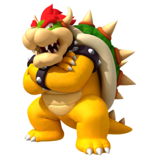

<link rel="import" href="../bower_components/polymer/polymer-element.html">

<dom-module id="game-win">
  <template>
    <style>
      .result__img {
        width: 20%;
      }

      .result {
      	display: flex;
	    justify-content: center;
	    align-items: center;
      }
    </style>

    <app-route
      route="{{route}}"
      pattern="/:win"
      data="{{data}}">
    </app-route>

    <div class="result">

	    <template is="dom-if" if="[[rock]]">
	      
	    </template>

	    <template is="dom-if" if="[[paper]]">
	      
	    </template>

	    <template is="dom-if" if="[[scissors]]">
	      
	    </template>

	    <template is="dom-if" if="[[draw]]">
	      
	    </template>
	</div>

  </template>

<script>
  (function gameWin(customElements) {
    'use strict';

    class GameWin extends Polymer.Element {
      static get is() { return 'game-win'; }
      static get properties() {
        return {
          route: Object
        }
      }

      static get observers() {
        return [
          '_newWin(data.win)'
        ]
      }

      _resetValues() {
      	this.set('rock', false);
      	this.set('paper', false);
      	this.set('scissors', false);
      	this.set('draw', false);
      }

        _newWin(win) {
          this._resetValues();
          if (win === 'rock') {
          	this.set('rock', true);
          } else if (win === 'paper') {
          	this.set('paper', true);
          } else if (win === 'scissors') {
          	this.set('scissors', true);
          } else if (win === 'draw') {
          	this.set('draw', true);
          }
        }

    }
    customElements.define(GameWin.is, GameWin);
  })(window.customElements);
</script>
